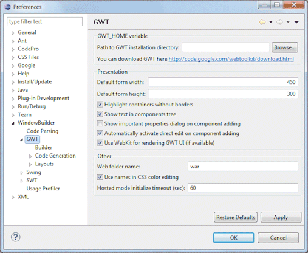
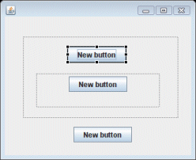
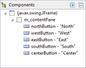
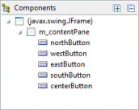
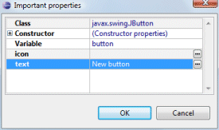
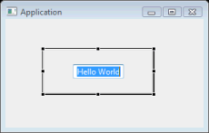

|  Here is the list of GWT Designer preference pages: Path to GWT installation directoryThis preference controls the path to your GWT installation directory. If you don't have GWT installed, you can download it using the provided link. Default form width & heightThese preferences control the default form size used for any window or dialog created by Swing Designer. Highlight containers without bordersThis preference determines whether Swing Designer draws a dotted rectangle around borderless JPanels.  Show text in components treeThis preference determines whether the text label of a widget (like a button, label, etc.) is shown next to the widget's name in the Component Tree.   Show important properties dialog on component addingThis preference controls whether the important properties dialog is shown whenever a new widget is created. The important properties dialog provides access to the widget's name, text and icon properties and style settings.  Automatically activate direct edit on component addingThis preference controls whether direct edit mode is automatically invoked when a new component is added to the window. When this option is enabled, it makes it easy to immediately set the text label on a widget as soon as it is created.  Web folder nameThis preference controls what folder name is used by default for web resources (e.g., "war", "WebContent", etc.). Use names in CSS color editingThis preference controls whether color names are used rather than numeric values when editing CSS colors. Hosted mode initialize timeout (secs)This preference determines the maximum number of seconds allowed to initialized GWT hosted mode before a timeout failure is generated. A timeout failure typically indicates that something (local firewall, anti-virus, etc.) is interfering with local host communications. |